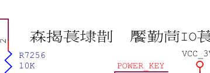
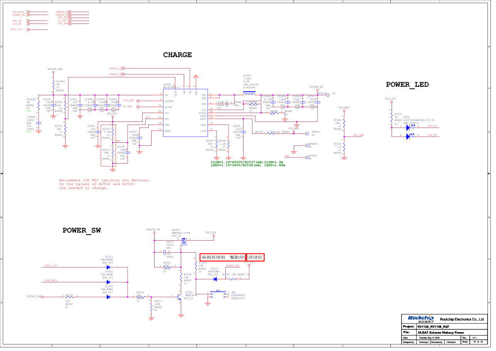
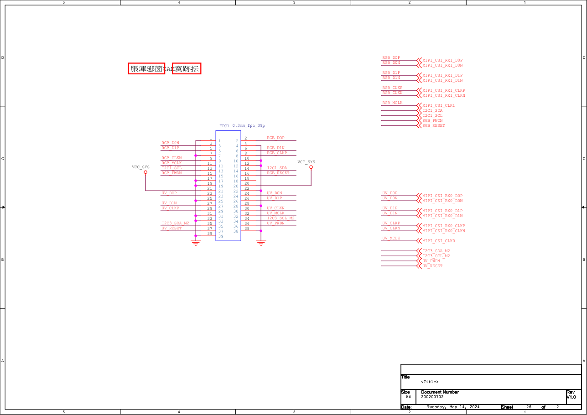
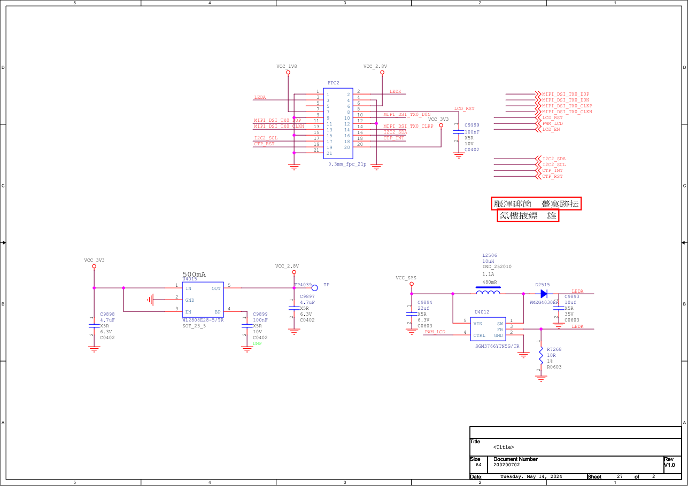
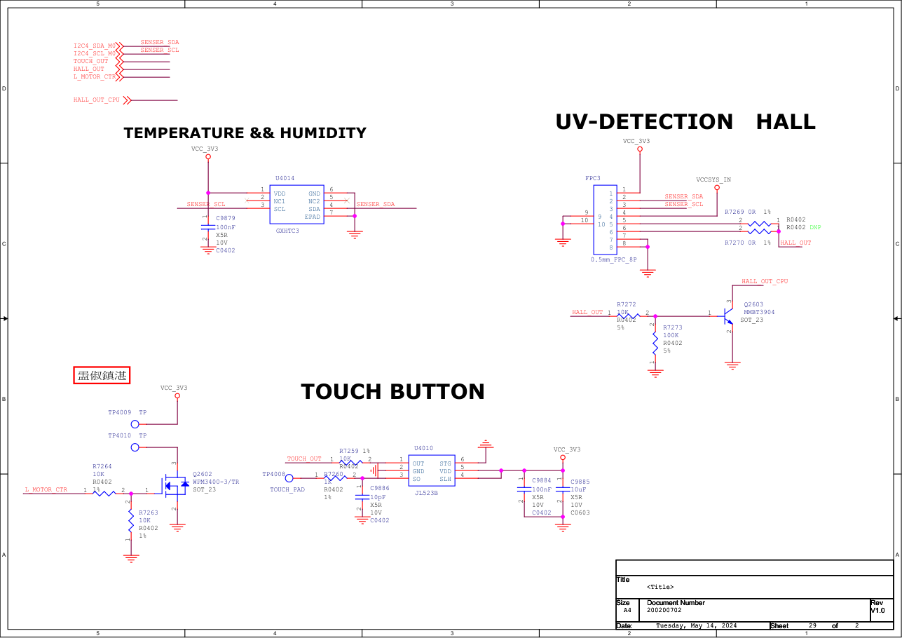

原 PDF 的中文是 GBK 編碼卻用 Big5 字型顯示，所以顯示成亂碼。程式已經反推回中文並寫進 KiCad；「?」表示該字無法確定，請你決定。
| # | 頁 | 原圖截圖 | 原亂碼 | 還原結果 | 我的判斷 |
|---|---|---|---|---|---|
| 1 | P11 |  | 森揭萇埭剒饜勤茼 | 此处电源需匹配对应 | |
| 2 | P11 | 萇埭郖 | 电源域 | ||
| 3 | P15 | 脹渾郔笝 | 等待最终 | ||
| 4 | P15 | 寞跡抎 | 规格书 | ||
| 5 | P16 | 脹渾郔笝躉寞跡抎 | 等待最终屏幕规格书 | ||
| 6 | P16 | 氝樓掖嫖雄 | 添加背光驱动 | ||
| 7 | P18 | 盄俶鎮湛 | 线性马达 |
第 11 頁

第 15 頁

第 16 頁

第 18 頁
